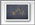
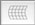

If the axis on the image of the graph are not aligned to the horizontal and vertical directions, try to:

You can also deform the coordinate frame by chosing and moving a corner:
This section describes how to adjust the coordinate frame when the ordinate (y) axis is deformed. This option is useful if:
Select and click on a point of the deformed ordinate axis in the image. Repeat this step a few times until the side of the coordinate frame matches the image of the deformed axis.
Note that any number of actions in GraphClick can be undone or redone by selecting (⌘Z) or (⇧⌘Z), respectively.
The list Deformation Points in the Deformation Inspector

indicates the y-coordinate of each deformation point. Click on a value in the list to select the corresponding point. The selected deformations points are indicated by dots on the coordinate frame. If necessary, change the value of these coordinates (by double-clicking on the list items) to match the positions on the graph.